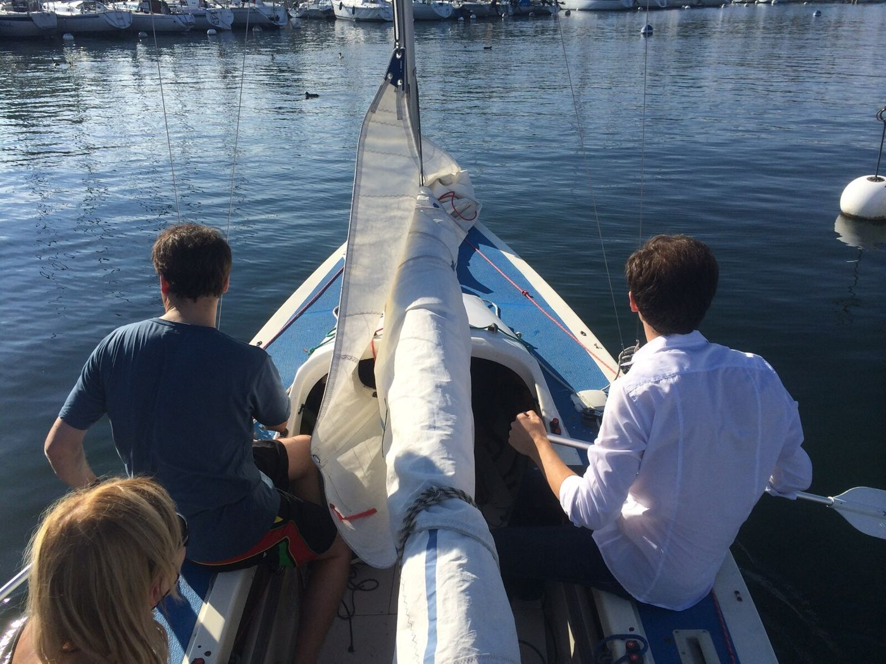
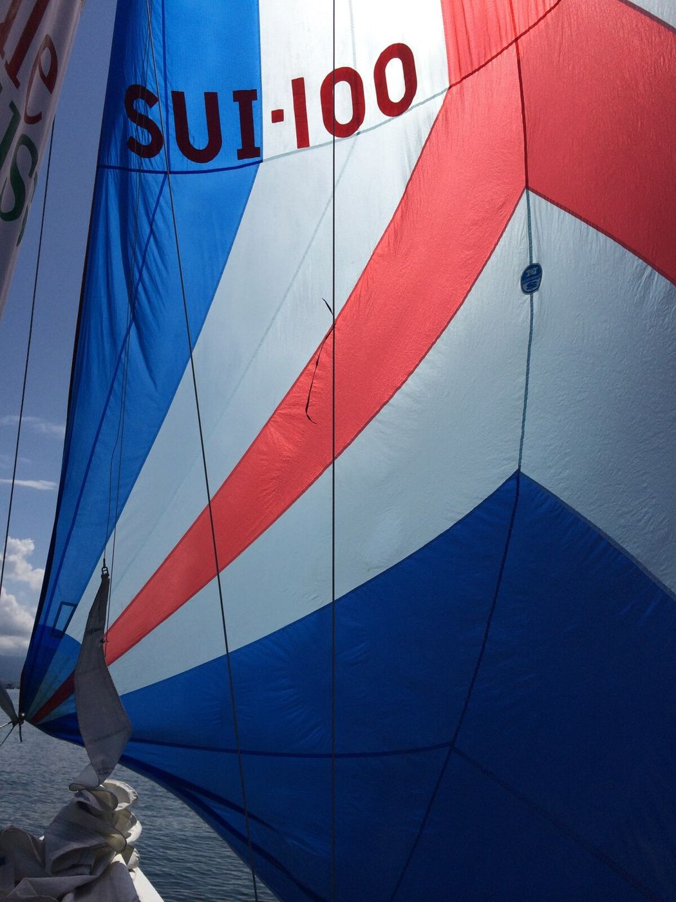
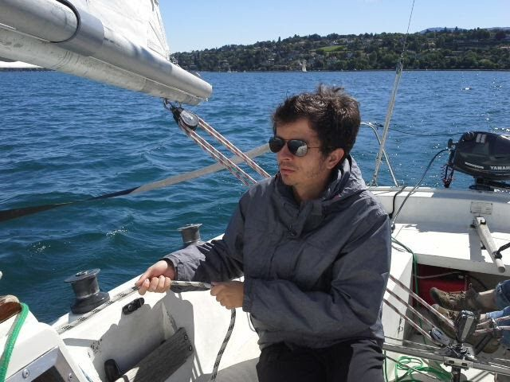
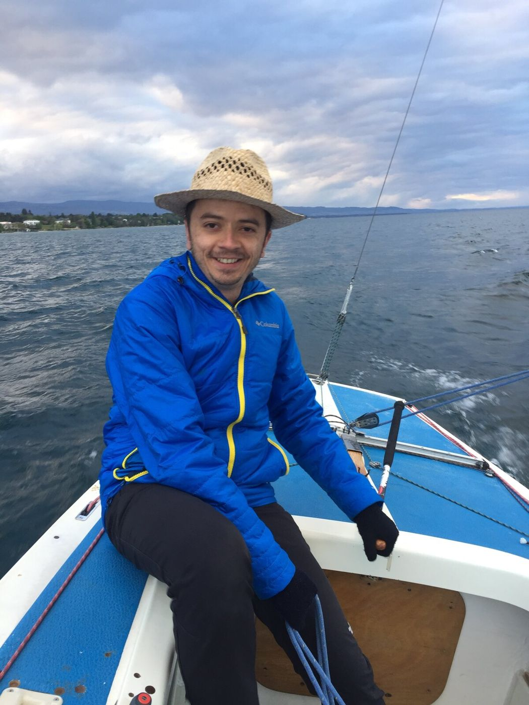
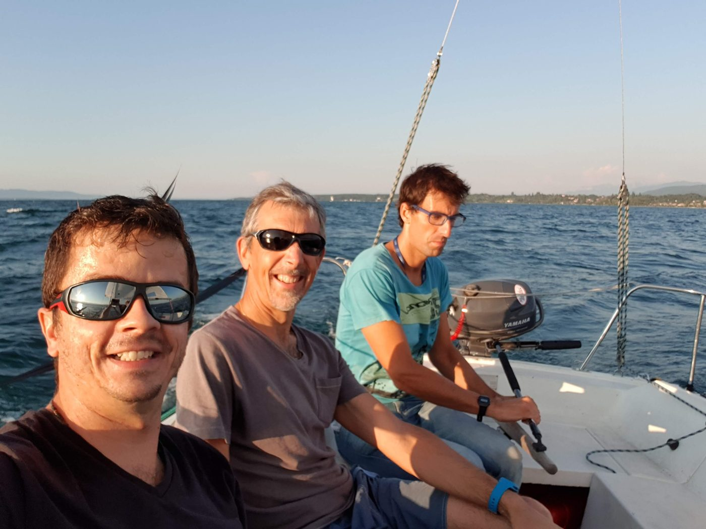
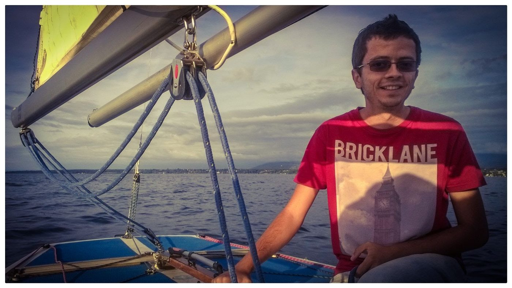
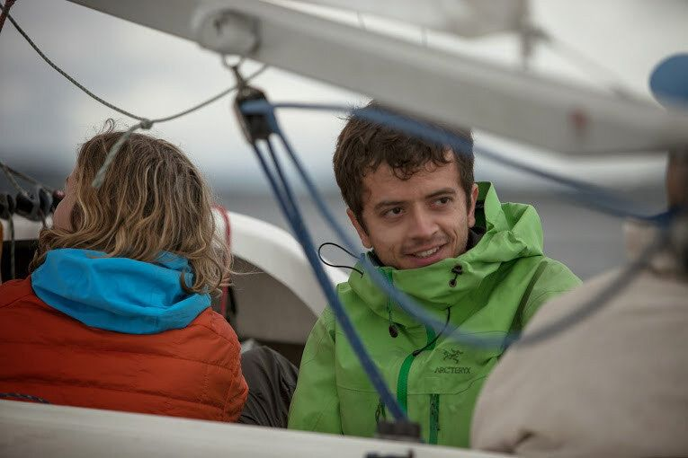
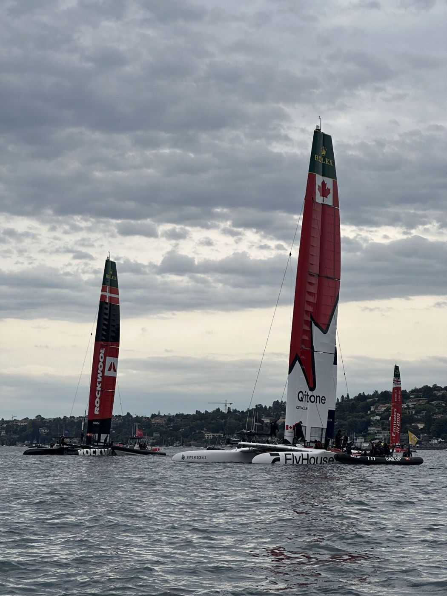
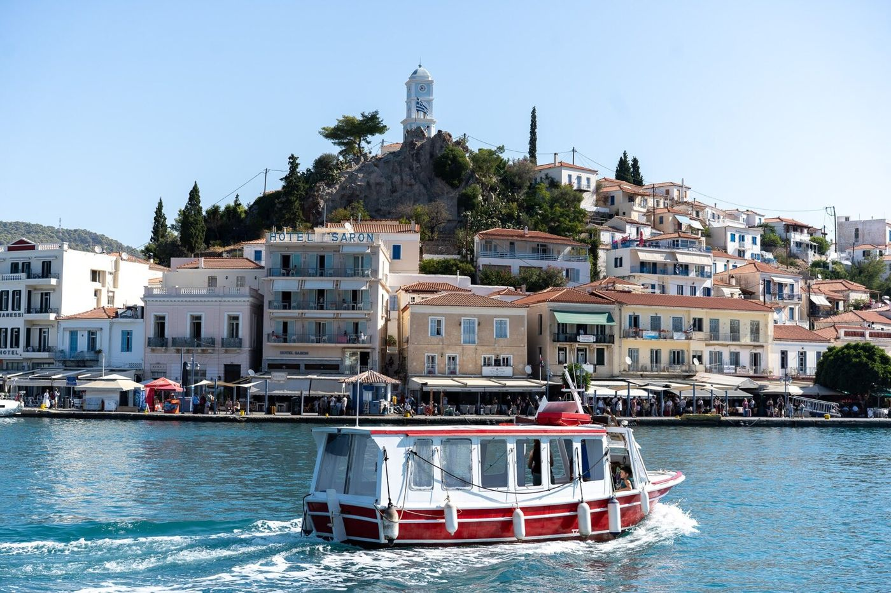

Twelve years of sailing with the Yachting Club CERNDoze anos de vela com o Yachting Club CERNDouze ans de voile avec le Yachting Club CERN
I had never been on a sailing boat when I arrived in Geneva. In 2014 I put my name in the Yachting Club CERN lottery for a place on a sailing course, and I have been sailing ever since.
A lottery ticket
The Yachting Club CERN (YCC) was started by people from CERN more than fifty years ago. It now has over 400 members, about half of whom do not work at CERN, and its own fleet on the lake. Volunteers teach low-cost theory and practice courses to around a hundred people a year, and because places are limited, they are drawn by lottery every spring.
In 2014 the Yngling course had 17 places. I was one of the winners.
Eu nunca tinha subido num veleiro quando cheguei a Genebra. Em 2014 coloquei meu nome no sorteio do Yachting Club CERN para uma vaga num curso de vela, e desde então não parei mais de velejar.
Um bilhete de sorteio
O Yachting Club CERN (YCC) foi criado por pessoas do CERN há mais de cinquenta anos. Hoje tem mais de 400 sócios, cerca de metade deles de fora do CERN, e uma frota própria no lago. Voluntários dão cursos teóricos e práticos a preço baixo para umas cem pessoas por ano e, como as vagas são limitadas, elas são sorteadas a cada primavera.
Em 2014 o curso de Yngling tinha 17 vagas. Eu fui um dos sorteados.
Je n'étais jamais monté sur un voilier en arrivant à Genève. En 2014, je me suis inscrit à la loterie du Yachting Club CERN pour une place dans un cours de voile, et je navigue depuis.
Un billet de loterie
Le Yachting Club CERN (YCC) a été fondé par des gens du CERN il y a plus de cinquante ans. Il compte aujourd'hui plus de 400 membres, dont environ la moitié ne travaillent pas au CERN, et possède sa propre flotte sur le lac. Des bénévoles y donnent des cours de théorie et de pratique à petit prix à une centaine de personnes par an et, comme les places sont limitées, elles sont tirées au sort chaque printemps.
En 2014, le cours Yngling offrait 17 places. J'ai fait partie des gagnants.
| CourseCursoCours | PlacesVagasPlaces | NameNomeNom | OutcomeResultadoRésultat |
|---|---|---|---|
| Yngling | 17 | Marcos Vinícius Silva Oliveira | Winner |
On 28 July 2014 I passed the test for the Yngling key, the club's permission to take that boat out as skipper. The examiner wrote that all manoeuvres were done as they should be, and told me to keep coming to the Thursday practice sessions to build confidence.
Three days later I took friends out on my first outing as skipper.
Em 28 de julho de 2014 passei no teste da chave do Yngling, a permissão do clube para sair com esse barco como skipper. O examinador escreveu que todas as manobras foram feitas como deveriam e me aconselhou a continuar indo aos treinos de quinta-feira para ganhar confiança.
Três dias depois levei amigos na minha primeira saída como skipper.
Le 28 juillet 2014, j'ai réussi le test de la clé Yngling, l'autorisation du club pour sortir ce bateau comme skipper. L'examinateur a noté que toutes les manœuvres avaient été faites comme il fallait, et m'a conseillé de continuer à venir aux entraînements du jeudi pour prendre de l'assurance.
Trois jours plus tard, j'emmenais des amis pour ma première sortie comme skipper.

One key at a time
The club works with keys. Each type of boat has its own course and test, run by volunteer examiners, and passing it lets you book that boat on your own. These are mine, with the dates of the test reports.
Uma chave de cada vez
O clube funciona com chaves. Cada tipo de barco tem seu curso e seu teste, aplicado por examinadores voluntários, e quem passa pode reservar aquele barco sozinho. Estas são as minhas, com as datas dos relatórios de teste.
Une clé après l'autre
Le club fonctionne avec des clés. Chaque type de bateau a son cours et son test, menés par des examinateurs bénévoles, et le réussir permet de réserver ce bateau seul. Voici les miennes, avec les dates des rapports de test.
- YnglingThree-person keelboat, the club's school boat. Tested on 28 July 2014.Quilha para três pessoas, o barco-escola do clube. Teste em 28 de julho de 2014.Quillard à trois équipiers, le bateau-école du club. Testé le 28 juillet 2014.
- DinghyDinghyDériveurOn a Laser 2, in 1 Beaufort of wind, on 1 September 2015. Passed, with an honest note that the helm should sit out confidently on the side and not huddle in the boat.Num Laser 2, com vento de 1 Beaufort, em 1º de setembro de 2015. Aprovado, com a observação sincera de que o timoneiro deve sentar na borda com confiança, e não se encolher dentro do barco.Sur un Laser 2, par 1 Beaufort, le 1er septembre 2015. Réussi, avec la remarque honnête que le barreur doit s'asseoir franchement au rappel au lieu de se blottir dans le bateau.
- SurpriseA test programme spread from October 2021 to 23 July 2022, in winds from 0 to 5 Beaufort, including the club's J/70 and J/80. Together with the Swiss inshore sailing licence, it gave me the club's Surprise skipper licence.Um programa de testes de outubro de 2021 a 23 de julho de 2022, com ventos de 0 a 5 Beaufort, incluindo os J/70 e J/80 do clube. Junto com a carta de vela suíça para lagos, me deu a licença de skipper de Surprise do clube.Un programme de test étalé d'octobre 2021 au 23 juillet 2022, par 0 à 5 Beaufort, y compris les J/70 et J/80 du club. Avec le permis voile suisse pour les lacs, il m'a donné la licence de skipper Surprise du club.
- GibSeaThe club's cabin keelboat, on 28 June 2023. Stopping at the buoy, tacking, gybing, man overboard and harbour manoeuvres.O veleiro de cabine do clube, em 28 de junho de 2023. Parada na boia, viradas por d'avante e em roda, homem ao mar e manobras no porto.Le quillard habitable du club, le 28 juin 2023. Arrêt à la bouée, virements, empannages, homme à la mer et manœuvres de port.
- Motor boatBarco a motorBateau à moteurThe Geneva cantonal motor boat licence on 23 August 2023, and the club's test on the Boston Whaler in August 2023, so I could drive the safety boat during courses.A carta cantonal de Genebra para barco a motor em 23 de agosto de 2023 e o teste do clube no Boston Whaler em agosto de 2023, para poder pilotar o barco de segurança durante os cursos.Le permis cantonal genevois pour bateau à moteur le 23 août 2023, et le test du club sur le Boston Whaler en août 2023, pour piloter le bateau de sécurité pendant les cours.
- Bise VA familiarisation on the club's Bise V on 7 October 2026: engine, rigging, reefing, and taking her in and out of the port.Uma familiarização com o Bise V do clube em 7 de outubro de 2026: motor, cordame, rizos e entrar e sair do porto.Une familiarisation sur le Bise V du club le 7 octobre 2026 : moteur, gréement, prise de ris, entrée et sortie du port.
A test is not one afternoon. The Surprise one, for example, was spread over a season: rigging and unrigging, leaving a mooring buoy and coming back to the berth, beating and running in 4 to 5 Beaufort, reefing the mainsail, changing the headsail, stopping at a buoy, picking up an object thrown overboard, sailing with the gennaker and manoeuvring in a tight space. Under engine there was a backwards slalom, the wooden poles, the crane, a U-turn in the narrow channel and stopping at a buoy. Each item was signed off on a different day, in whatever wind that day brought.
Um teste não é uma tarde só. O de Surprise, por exemplo, se estendeu por uma temporada: montar e desmontar o barco, sair de uma boia e voltar à vaga, orça e popa com vento de 4 a 5 Beaufort, rizar a vela grande, trocar a vela de proa, parar numa boia, recolher um objeto jogado ao mar, velejar com o gennaker e manobrar em espaço apertado. No motor houve slalom de ré, as estacas de madeira, o guindaste, uma volta de 180 graus no canal estreito e parada na boia. Cada item foi validado num dia diferente, com o vento que aquele dia trouxe.
Un test ne se passe pas en un après-midi. Celui du Surprise, par exemple, s'est étalé sur une saison : gréer et dégréer, quitter une bouée et revenir à la place, près et vent arrière par 4 à 5 Beaufort, prendre un ris, changer de voile d'avant, s'arrêter à une bouée, récupérer un objet tombé à l'eau, naviguer sous gennaker et manœuvrer dans un espace restreint. Au moteur, slalom en marche arrière, les pieux en bois, la grue, un demi-tour dans le chenal étroit et l'arrêt à la bouée. Chaque point a été validé un jour différent, avec le vent qu'apportait ce jour-là.


Giving back
A club like this runs on volunteers, and after a few seasons I became one. I was a Yngling instructor in 2021 and 2022. I go out on the surveillance boats that keep the practice courses safe, have helped transport boats, and have fixed things on board, from small repairs to electrical work. In my first five years I also organised about a hundred outings with colleagues and friends, most of whom had never sailed before.
Retribuindo
Um clube assim funciona graças aos voluntários e, depois de algumas temporadas, virei um deles. Fui instrutor de Yngling em 2021 e 2022. Saio nos barcos de vigilância que garantem a segurança dos cursos práticos, ajudei a transportar barcos e consertei coisas a bordo, de pequenos reparos a trabalhos elétricos. Nos meus primeiros cinco anos também organizei cerca de cem saídas com colegas e amigos, a maioria sem nunca ter velejado.
Rendre la pareille
Un club comme celui-ci vit grâce à ses bénévoles et, après quelques saisons, j'en suis devenu un. J'ai été moniteur Yngling en 2021 et 2022. Je sors sur les bateaux de surveillance qui assurent la sécurité des cours pratiques, j'ai aidé à transporter des bateaux, et j'ai réparé des choses à bord, des petites réparations aux travaux électriques. Pendant mes cinq premières années, j'ai aussi organisé une centaine de sorties avec des collègues et des amis, dont la plupart n'avaient jamais navigué.



Racing, and watching the fastest boats on the lake
With the club I have raced the Bol d'Or Mirabaud, the long race around the lake and the best-known regatta on any inland water, the Critérium Surprise in Rolle, the CERN Cup and many of the club's internal regattas.
In September 2025 the SailGP championship came to Geneva for the first time, the only freshwater venue of its season. We watched the F50 catamarans fly on their foils from a club boat in the spectator fleet.
Regatas, e os barcos mais rápidos do lago
Pelo clube corri o Bol d'Or Mirabaud, a longa regata ao redor do lago e a mais conhecida em águas interiores, o Critérium Surprise em Rolle, a CERN Cup e muitas regatas internas do clube.
Em setembro de 2025 o campeonato SailGP veio a Genebra pela primeira vez, a única etapa em água doce da temporada. Assistimos aos catamarãs F50 voando sobre os seus foils a partir de um barco do clube, na flotilha de espectadores.
Régates, et les bateaux les plus rapides du lac
Avec le club, j'ai couru le Bol d'Or Mirabaud, le long tour du lac et la régate en eaux intérieures la plus connue, le Critérium Surprise à Rolle, la CERN Cup et beaucoup de régates internes du club.
En septembre 2025, le championnat SailGP est venu à Genève pour la première fois, seule étape en eau douce de sa saison. Nous avons regardé les catamarans F50 voler sur leurs foils depuis un bateau du club, dans la flotte des spectateurs.


Club cruises
Every year the club charters a few boats somewhere warmer and sails for a week. I have joined four of these cruises. Each has its own page with a map of where we went.
Cruzeiros do clube
Todo ano o clube aluga alguns barcos num lugar mais quente e veleja por uma semana. Participei de quatro desses cruzeiros. Cada um tem a sua página, com um mapa do percurso.
Les croisières du club
Chaque année, le club loue quelques bateaux sous un ciel plus chaud et navigue pendant une semaine. J'ai participé à quatre de ces croisières. Chacune a sa page, avec une carte de l'itinéraire.
 Canary IslandsIlhas CanáriasÎles CanariesTenerife, La Gomera and La Palma, about 175 nautical miles.Tenerife, La Gomera e La Palma, cerca de 175 milhas náuticas.Tenerife, La Gomera et La Palma, environ 175 milles nautiques.
Canary IslandsIlhas CanáriasÎles CanariesTenerife, La Gomera and La Palma, about 175 nautical miles.Tenerife, La Gomera e La Palma, cerca de 175 milhas náuticas.Tenerife, La Gomera et La Palma, environ 175 milles nautiques.
 Northern SporadesEspórades do NorteSporades du NordSkiathos, Alonissos, Skantzoura and Kyra Panagia.Skiathos, Alonissos, Skantzoura e Kyra Panagia.Skiathos, Alonissos, Skantzoura et Kyra Panagia.
Northern SporadesEspórades do NorteSporades du NordSkiathos, Alonissos, Skantzoura and Kyra Panagia.Skiathos, Alonissos, Skantzoura e Kyra Panagia.Skiathos, Alonissos, Skantzoura et Kyra Panagia.

Serifos to AthensDe Serifos a AtenasDe Sérifos à AthènesA night passage under the moon, Poros and the Saronic Gulf.Uma travessia noturna sob a lua, Poros e o Golfo Sarônico.Une traversée de nuit sous la lune, Poros et le golfe Saronique. DodecaneseDodecanesoDodécanèseKos, Astypalaia and Tilos.Kos, Astypalaia e Tilos.Kos, Astypalée et Tilos.
DodecaneseDodecanesoDodécanèseKos, Astypalaia and Tilos.Kos, Astypalaia e Tilos.Kos, Astypalée et Tilos.
Try it: sail a regatta course
Words like close-hauled or gybe only stick once you have steered through them. In this small game the wind blows from the top of the screen. Cross the start line, beat up to the windward mark, sail down to the leeward mark and beat back up to the finish, leaving both marks to port. The panel names your point of sail, your tack and every manoeuvre as you make it.
Experimente: veleje um percurso de regata
Palavras como contravento ou jaibe só ficam na memória depois que a gente passa por elas no leme. Neste joguinho o vento sopra do alto da tela. Cruze a linha de largada, suba no contravento até a boia de barlavento, desça até a boia de sotavento e volte no contravento até a chegada, deixando as duas boias a bombordo. O painel diz a sua mareação, as suas amuras e cada manobra no momento em que você a faz.
À vous : bouclez un parcours de régate
Des mots comme près ou empannage ne restent qu'une fois qu'on les a vécus à la barre. Dans ce petit jeu, le vent souffle du haut de l'écran. Franchissez la ligne de départ, remontez au près jusqu'à la bouée au vent, descendez jusqu'à la bouée sous le vent et remontez jusqu'à l'arrivée, en laissant les deux bouées à bâbord. Le panneau nomme votre allure, votre amure et chaque manœuvre au moment où vous la faites.
The words in the game
As palavras do jogo
Les mots du jeu
- Windward and leewardBarlavento e sotaventoAu vent et sous le vent
- Windward is the side the wind comes from; leeward is the sheltered side, where the sail sets.Barlavento é o lado de onde vem o vento; sotavento é o lado abrigado, para onde a vela vai.Au vent, c'est le côté d'où vient le vent ; sous le vent, le côté abrité, celui où porte la voile.
- Port and starboardBombordo e boresteBâbord et tribord
- Left and right when you face the bow. On the dial, port is the red dot and starboard the green one.Esquerda e direita de quem olha para a proa. No mostrador, bombordo é o ponto vermelho e boreste o verde.La gauche et la droite quand on regarde vers l'avant. Sur le cadran, bâbord est le point rouge et tribord le vert.
- Starboard tackAmuras a boresteTribord amures
- The wind comes over the starboard side and the boom is out to port. In a race it has right of way over a boat on port tack.O vento entra por boreste e a retranca fica a bombordo. Em regata, tem preferência sobre um barco amurado a bombordo.Le vent arrive par tribord et la bôme est à bâbord. En régate, on est prioritaire sur un bateau bâbord amures.
- Port tackAmuras a bombordoBâbord amures
- The wind comes over the port side and the boom is out to starboard. It keeps clear of boats on starboard tack.O vento entra por bombordo e a retranca fica a boreste. Deve se manter afastado dos barcos amurados a boreste.Le vent arrive par bâbord et la bôme est à tribord. On doit s'écarter des bateaux tribord amures.
- TackVirada por d'avanteVirement de bord
- Changing tack by turning the bow through the wind. The boat slows down while it points into the no-go zone.Trocar de amuras passando a proa pela linha do vento. O barco perde velocidade enquanto aponta para a zona morta.Changer d'amure en faisant passer l'étrave dans le lit du vent. Le bateau ralentit tant qu'il pointe dans la zone morte.
- Gybe (jibe)Jaibe (virada em roda)Empannage
- Changing tack by turning the stern through the wind. The boom swings across the boat, so heads down.Trocar de amuras passando a popa pela linha do vento. A retranca atravessa o barco: cuidado com a cabeça.Changer d'amure en faisant passer l'arrière dans le lit du vent. La bôme traverse le bateau : attention aux têtes.
- Luff up and bear awayOrçar e arribarLofer et abattre
- To luff up is to steer towards the wind; to bear away is to steer away from it.Orçar é levar a proa em direção ao vento; arribar é afastá-la dele.Lofer, c'est rapprocher l'étrave du vent ; abattre, c'est l'en écarter.
- In ironsAproado ao ventoVent debout
- Pointing too close to the wind, inside the no-go zone. The sail flaps and the boat stops.Com a proa perto demais do vento, dentro da zona morta. A vela paneja e o barco para.L'étrave trop près du vent, dans la zone morte. La voile faseye et le bateau s'arrête.
- Close-hauledContraventoPrès
- As close to the wind as the boat will sail, about 45 degrees, with the sail pulled in tight.O mais perto do vento que o barco consegue velejar, uns 45 graus, com a vela bem caçada.Au plus près du vent que le bateau peut naviguer, environ 45 degrés, voile bien bordée.
- Close reachOrça folgadaBon plein
- A little further off the wind than close-hauled, with the sail slightly eased.Um pouco mais aberto que o contravento, com a vela levemente folgada.Un peu plus ouvert que le près, voile légèrement choquée.
- Beam reachTravésTravers
- The wind comes from the side, at about 90 degrees to the boat.O vento vem de lado, a uns 90 graus do barco.Le vent vient de côté, à environ 90 degrés du bateau.
- Broad reachAlhetaLargue
- The wind comes from behind the beam, over a rear quarter. A fast and comfortable point of sail.O vento vem de trás do través, pela alheta. Uma mareação rápida e confortável.Le vent vient de l'arrière du travers, par la hanche. Une allure rapide et confortable.
- RunningPopaVent arrière
- Sailing downwind with the wind from astern and the sail right out. In the game it is slower than a broad reach, so gybing downwind pays.Velejar com o vento pela popa e a vela toda aberta. No jogo é mais lento que a alheta, então descer dando jaibes compensa.Naviguer avec le vent dans le dos, voile grande ouverte. Dans le jeu, c'est plus lent que le largue : descendre en empannant est payant.
- BeatingBordejarLouvoyer
- Working upwind in a zig-zag, close-hauled on one tack and then the other.Subir contra o vento em zigue-zague, no contravento num bordo e depois no outro.Remonter au vent en zigzag, au près sur un bord puis sur l'autre.
Thank you to the volunteers who taught and tested me over the years, among them Adam Bornstein, Paul Smith, Torsten Layda, Michal Kwiatek, Manfred Willenbrock, Marcel Arditi, Alexander Kasterine and Michel Chevallier.
Obrigado aos voluntários que me ensinaram e me avaliaram ao longo dos anos, entre eles Adam Bornstein, Paul Smith, Torsten Layda, Michal Kwiatek, Manfred Willenbrock, Marcel Arditi, Alexander Kasterine e Michel Chevallier.
Merci aux bénévoles qui m'ont formé et évalué au fil des ans, parmi eux Adam Bornstein, Paul Smith, Torsten Layda, Michal Kwiatek, Manfred Willenbrock, Marcel Arditi, Alexander Kasterine et Michel Chevallier.